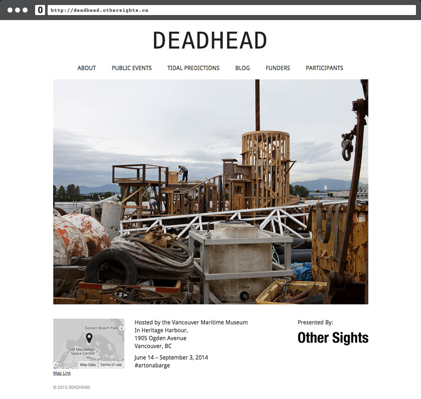
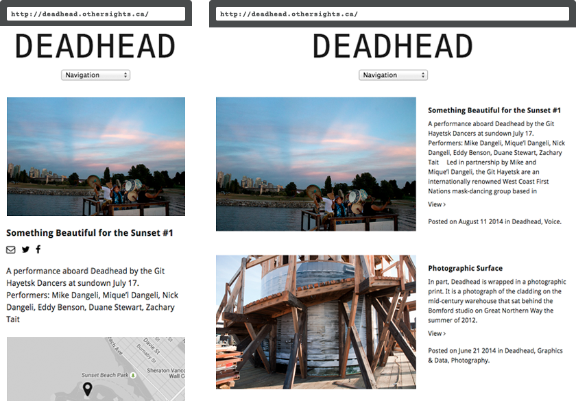

Other Sights — Deadhead
A minimal and functional site that 'stays in the background' in order to showcase numerous events and help answer one question: 'What exactly is #artonabarge?'
The summer of 2014 marked the long-awaited launch of 'Deadhead', a floating art project by Family Bomford. In preparation for the launch and subsequent events to be held aboard Deadhead, Other Sights required a bare-bones website that let the work take center stage.
For the duration of the presentation the barge was moored in Vancouver's harbour, so a map with linked travel directions was kept front and center in the footer of the site.
On-board events were featured in a blog categorized by theme. Posts featured streamlined sharing functionality that allowed users to post to social media without leaving the page.
Mobile navigation was kept to a minimum list of pages to maximize on-screen space for the content. As well, Eventbrite was integrated into the site for online ticketing, allowing guests to plan their entire excursion right from the site.
Conclusion
Simple and clean, this site acted as a tool that was used to help people find and plan their journey to Deadhead. In addition, the site helped to communicate Deadhead's story and highlight the special events onboard. Now that the project is completed, the site acts as an archive of a project that was enjoyed by many.